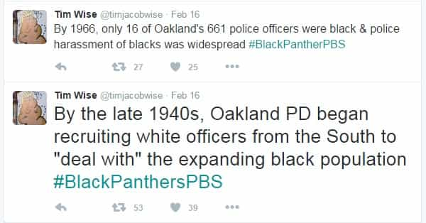
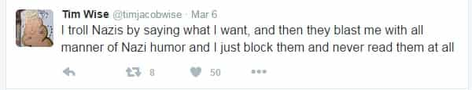
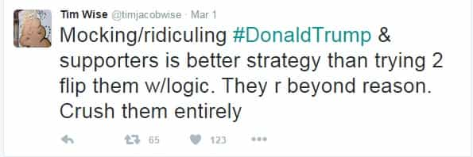
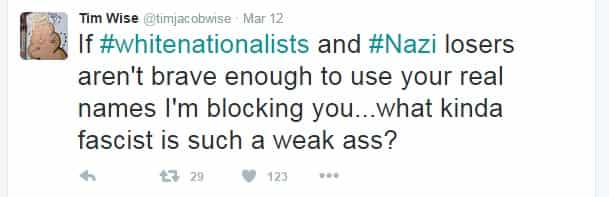
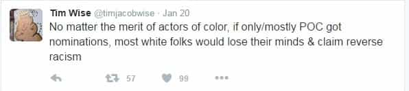
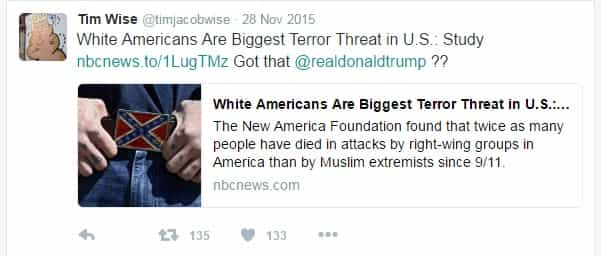

John Carver is a four year ROK veteran with over fifty articles of SJW-triggering truth bombs on archive. You can follow him on Twitter if you are so inclined.


This article is a continuation of an educational series addressing SJW’s and their logical fallacies on Twitter. CNN commentator Sally Kohn was the first person showcased in this series, and now we are moving onwards to another giant human hemorrhoid to logic and reason: Tim Wise, whose family name is most ironic indeed.
Tim Wise is a highly controversial “anti racist” (Jewish Europhobic agitator and cultural Marxist propagandist) author and speaker who lives in a Tennessee census tract which is over 95% white. (Diversity apparently isn’t important when considering the school districts for his two precious daughters).
He has written seven books which more or less address how awful white people are, and are undeserving of future self-preservation and a sense of nationalism or pride. Because that would like, on queue from the SJW playbook, make you a “Nazi” and stuff.
Sales of these books and his ongoing speeches and television appearances have earned him a comfortable living, though unfortunately due to exploiting the emotions and fervors of woefully uninformed African-Americans, and even stupider bleeding heart white liberals. Observe.
#BlackLivesAreUntouchable #BlameAllWhitePeople #BurnItDown #SocialJustice #DisruptCapitalism #DisruptChurch #DisruptTraffic
Tim also has an incredibly irritating habit of routinely referring to people of European descent as “white folks” (which I suspect is done purposefully as a historical jab against salt-of-the-Earth white people who referred to blacks as “black folks”) and, in complete SJW fashion, will double down on his entirely false anti-white narratives at all cost. After all, book sales and cash flow are at stake if he dares to admit that his logic is wrong.
Speaking of logic, we will now dissect a number of his tweets for fallacious content.

SJW’s like Tim Wise are absolutely obsessed with bringing up examples from the distant past to continue pushing a false white oppressor-black victim mythos in the 2010’s (and the white guilt trip which will hopefully ensue). These cheap insults and tactics are completely irrelevant in 2016 USA, where African-Americans have enjoyed full civil rights and privileges for nearly two generations and counting.
This is part of the reason why the “progressive” left is jeeringly called the “regressive” left—because they are constantly living in bygone days to push their devious narratives, at the partial or complete expense of achieving true progress.

A “pooh-pooh” is a fallacy that consists of dismissing an argument as being unworthy of serious consideration, often by ridiculing the argument without responding to the substance of the argument.
In this tweet, Tim claims that he says whatever he wants to his target audience (“Nazis”) but is unwilling to be receptive to whatever counter-arguments his opponents have to say. Pooh-pooh’s are most often used to express a sheer sense of spite for the opponent, or due to the users desire to simply be an ass (which Tim Wise does very well).

Here is a second example of a Pooh-pooh (laced with ad hominem) presented by Tim Wise. We are well aware by now that he isn’t going to respond favorably to anything that Donald Trump or his supporters has to say, but this tweet is particularly hilarious since Timmy actually thinks that HE is a legitimate source of logic and reason.

A “loaded question” is a question that has a negative presumption built into it, so that the target cannot answer it without appearing guilty. Recipients of loaded questions often feel compelled to defend themselves, but they are actually being lured into a trap.
In this tweet, anyone who is actually “brave” enough to debate with Timmy while using their real names will inadvertently be admitting that they are a “White Nationalist” or a “Nazi” in his eyes.
And who would want to confront an SJW with their real name anyway? Their single most powerful form of retribution is trying to doxx you on Google (hoping to make you unable to obtain an income via future employment) or to get you fired (removed from your chief source of income).
Only those who are financially resilient (Roosh, Milo, Cernovich, etc.) have the privilege to confront SJWs head-on with their real identity.

Tim is creating your standard two-choice false dilemma, implying that a vote for Hillary Clinton or Bernie Sanders (multiracial democracy) will be leaps and bounds better than a supposedly fascist Donald Trump (white nationalism). However, anybody with half a brain knows that Donald Trump does not stand for “white nationalism” just because he wants to curtail illegal immigration and secure the borders.
Take a chill pill Timmy. Oh and please tell me, what makes a multiracial democracy any better than a monoracial democracy, such as those in Japan, South Korea, and Taiwan? You know, countries which enjoy rock bottom crime rates, excellent social cohesion, proud and distinct ethnic cultures, and almost no racial discord or Islamic terrorism?
As you can clearly see, monoracial Asian nationalism has been “toxic” to these Taiwanese children, who cannot celebrate diversity in the same way that people in Paris, Orlando, or San Bernardino can. They will probably grow up to be unhappy, uncoordinated, undisciplined, bigoted, tattoo-free hooligans as adults. 🙁

A hasty generalization is a fallacy which is based on making a hasty conclusion to an action or event with insufficient evidence, often while giving little consideration to other variables. These are usually variables which (of course) go against the narrative that the arguer is trying to espouse.
During the stupid “Oscars So White” controversy earlier this year, Tim is trying to imply that “white folks” would lose their minds and claim reverse racism if too many non-whites got Oscar nominations or awards. But has he completely forgotten that both Halle Berry and Denzel Washington won the best actor Oscars in 2002?
That would mean African-Americans won 50% of the acting awards that year, despite being just 13% of the US population, while also having considerable competition from white actors potentially hailing from other Anglosphere countries such as Australia, Canada, and the United Kingdom.
Last time I checked, most “white folks” during this period were very congratulatory of the two actors for their achievements, and did not lose their minds or claim reverse racism. They graciously accepted that two black actors were the best that the acting world had to offer in the preceding year.
According to Tim Wise, this image would have driven “most” white people insane in 2002

Last but not least, Tim Wise is cherry-picking data from the New America Foundation (complete with image of Confederate flag to specifically try and implicate white Southerners), which is advancing the face-palm worthy narrative that white extremists are a far greater threat to the United States than Muslims.
Released in June 2015 (long before San Bernardino and Orlando), the foundation says that 48 people were killed by white terrorists, while 26 were killed by radical Islamists, since September 11th, 2001. Therefore, the narrative that looney leftists are trying to espouse is that white “right wing groups” are twice as likely to kill you than a Muslim extremist.
What the data does not tell you (beyond completely omitting 9/11 and the future Muslim mass shootings of San Bernardino and Orlando), is that Muslims are barely 1 percent of the US population while Non-Hispanic Whites are nearly 63 percent.
Therefore, even if twice as many terrorist deaths are caused by Americans of European descent up to this point, Muslim extremists are still killing people at a rate over 30 times relative to their population.
Wow. Kind of purposefully avoided the demographic variable there didn’t you Timmy boy? Oh and the New America Foundation website has now been updated, with “Violent Jihadist Attacks” now at 94 and “Far Right Wing Attacks” standing at 48.
Whose twice as likely to be the killer now ay? Per head of population, those numbers would now equate to a Muslim extremist death rate of over 100 times relative to Non-Hispanic Whites.
The Kingsmen know! I’d better double down!
I find it incredibly difficult to imagine that Tim Wise actually believes in what he sells. Frankly, I think that he doesn’t. He knows that what he is peddling is horse manure.
The narrative of doubling down on the white privilege-black victim ethos for his books and speeches is simply where he has carved out a lucrative niche, and has been very diligent and successful at it for many years. For that, I have to give the guy some credit.
However, as long as he wants to continue the bogus narratives and maintain a public figure, people are going to call him out on his fallacious twitter phlegm. Now then, whose next?
 If you like this article and are concerned about the future of the Western world, check out Roosh's book Free Speech Isn't Free. It gives an inside look to how the globalist establishment is attempting to marginalize masculine men with a leftist agenda that promotes censorship, feminism, and sterility. It also shares key knowledge and tools that you can use to defend yourself against social justice attacks. Click here to learn more about the book. Your support will help maintain our operation.
If you like this article and are concerned about the future of the Western world, check out Roosh's book Free Speech Isn't Free. It gives an inside look to how the globalist establishment is attempting to marginalize masculine men with a leftist agenda that promotes censorship, feminism, and sterility. It also shares key knowledge and tools that you can use to defend yourself against social justice attacks. Click here to learn more about the book. Your support will help maintain our operation.
Read More: 7 Common Logical Fallacies That Marxist Sympathizer Sally Kohn Effortlessly Teaches Us